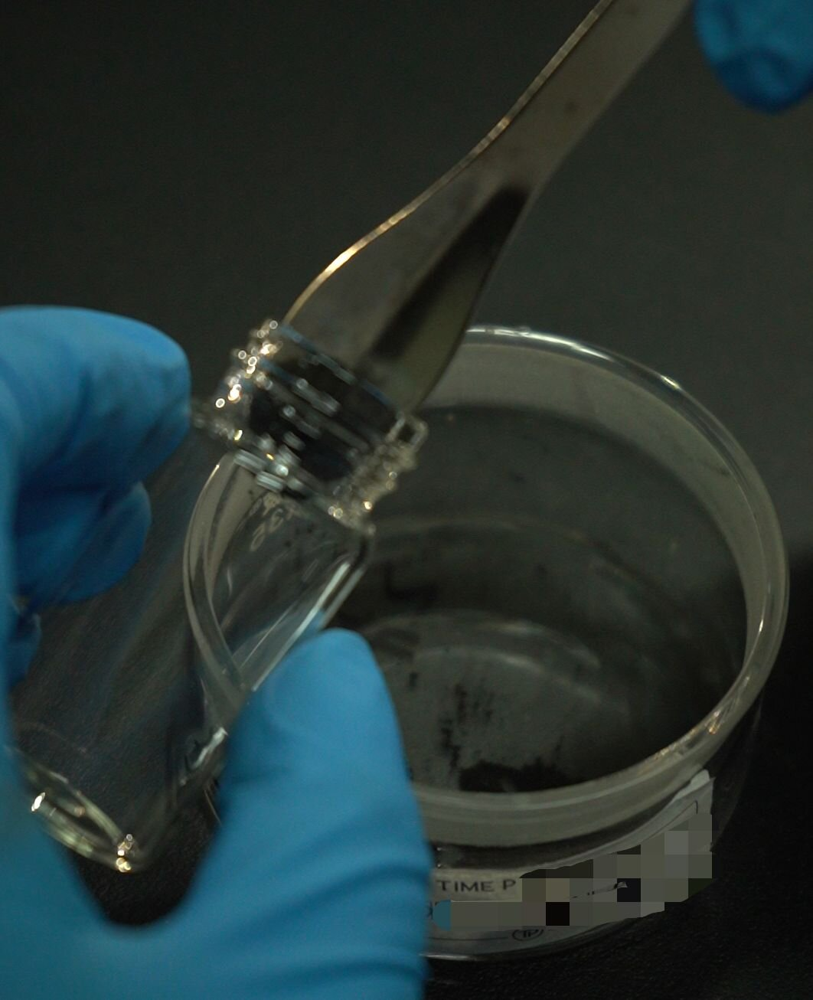
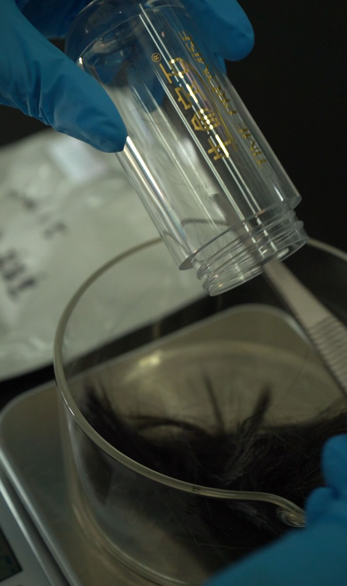

Synthetic Diamond Engineering: Doping and Color Control

Intentional doping and color control in synthetic diamond engineering transforms the optical and electronic properties of laboratory-grown crystals for specialized applications. In HPHT memorial diamond manufacturing, doping is not merely an aesthetic concern—it determines gemological classification, market value, and functional performance. This article examines the materials science of diamond doping: nitrogen as the dominant impurity in biological feedstocks, boron for p-type conductivity and blue coloration, phosphorus for n-type doping, and the process engineering protocols that control incorporation efficiency during crystal growth.
Quick Answer
Synthetic diamond color is controlled through intentional doping with nitrogen (yellow, 50–500 ppm), boron (blue, 0.3–5.0 ppm), or post-growth irradiation (pink, green, black). Memorial diamonds from biological carbon sources typically achieve near-colorless E–H grades through manganese-catalyst nitrogen gettering and thermal pre-treatment of feedstock. BioGem Lab's standard HPHT process targets Type IaA or Type IIa classification with nitrogen levels below 50 ppm and boron below 0.01 ppm, producing diamonds suitable for gemological grading without artificial color enhancement.
The Physics of Diamond Doping: Substitutional Impurities
Diamond's covalent crystal structure—each carbon atom tetrahedrally bonded to four neighbors in a rigid three-dimensional network—makes it resistant to impurity incorporation. The diamond lattice constant is 3.567 Å, and the C–C bond length is 1.544 Å. For a substitutional impurity to enter the lattice without creating excessive strain, its atomic radius and bonding configuration must be compatible with the host carbon site.
The tetrahedral covalent radius of carbon is 0.77 Å. Nitrogen (0.71 Å) and boron (0.82 Å) are the closest matches among elements that can form sp³ hybridized bonds, making them the most efficient substitutional dopants. Phosphorus (1.07 Å) and silicon (1.11 Å) introduce significant lattice distortion due to their larger size, limiting their solubility to the 10¹⁶–10¹⁸ cm⁻³ range (≈0.1–10 ppm). Transition metals—nickel (1.15 Å), cobalt (1.16 Å), and manganese (1.27 Å)—are too large for substitutional incorporation and instead form interstitial sites or metallic inclusions, which are treated as defects rather than dopants.
Each substitutional dopant introduces localized electronic states within diamond's wide bandgap (5.47 eV). The position of these states relative to the conduction band minimum and valence band maximum determines the optical absorption characteristics and electrical conductivity of the doped crystal. Nitrogen introduces a donor level 1.7 eV below the conduction band; boron introduces an acceptor level 0.37 eV above the valence band; phosphorus introduces a deep donor at 0.57 eV below the conduction band. These energy levels correspond to specific optical transitions that produce the characteristic colors of doped diamonds.
Nitrogen Doping: Mechanisms and Color Formation
Nitrogen is the most common impurity in both natural and synthetic diamonds. In HPHT memorial diamond production, nitrogen originates from two sources: the biological feedstock (human hair contains ~15–17 wt% nitrogen in keratin; pet fur ~12–14 wt%) and the growth atmosphere (nitrogen contamination from air leakage or purge gas impurities). Total nitrogen incorporation in as-grown HPHT diamonds typically ranges from 10–500 ppm, depending on catalyst composition, growth temperature, and feedstock purity.
The nitrogen incorporation efficiency from biological feedstock is governed by the distribution coefficient (Kd) between the diamond lattice and the metal catalyst. For nitrogen in the Ni-Mn-Co system, Kd ≈ 0.15–0.30, meaning that only 15–30% of the nitrogen available in the growth cell enters the diamond crystal; the remainder partitions into the catalyst or escapes as N₂ gas. This relatively low incorporation efficiency is advantageous for memorial diamond production, as it naturally limits nitrogen content even when feedstock purity is imperfect.
Nitrogen exists in the diamond lattice in several configurations, each with distinct optical signatures:
- Single substitutional nitrogen (C center): A nitrogen atom replacing a single carbon atom. This center produces a characteristic infrared absorption at 1,134 cm⁻¹ and 1,282 cm⁻¹ and broad absorption in the ultraviolet, contributing to pale yellow coloration. C centers are stable up to 1,700°C and are the dominant nitrogen form in Type Ib diamonds.
- A-center (N-N pair): Two adjacent substitutional nitrogen atoms. The A-center produces absorption at 1,282 cm⁻¹ and is the dominant form in Type IaA diamonds. A-centers do not produce strong visible absorption and are considered less color-active than C centers.
- B-center (N-V-N complex): Four nitrogen atoms surrounding a vacancy. B-centers produce absorption at 1,175 cm⁻¹ and are the dominant form in Type IaB diamonds. The aggregation from C → A → B requires thermal annealing at 1,500–2,000°C over geological timescales in natural diamonds, but can be accelerated in HPHT synthesis.
- Nitrogen-vacancy (NV) center: A substitutional nitrogen atom adjacent to a lattice vacancy. The NV⁻ center emits red fluorescence at 637 nm and is the basis for quantum sensing applications. In memorial diamonds, NV centers are undesirable as they indicate vacancy-related lattice damage.
The color intensity of nitrogen-doped diamonds follows approximately a linear relationship with total nitrogen concentration up to ~200 ppm. Above this threshold, saturation effects and aggregation into less color-active centers reduce the rate of yellow deepening. At 500 ppm, diamonds exhibit vivid "canary" yellow; at 50 ppm, the color is subtle enough to be classified as faint yellow (K–M range). For memorial diamond partners seeking near-colorless stones, the target nitrogen concentration is below 50 ppm, achievable through manganese-rich catalyst gettering and thermal pre-treatment of biological carbon.

Central laboratory HPHT synthesis control: nitrogen content is monitored via real-time gas analysis during growth cycles.
Boron Doping: p-Type Conductivity and Blue Coloration
Boron is the only element that produces p-type conductivity in diamond, and it is responsible for the rare natural Type IIb blue diamonds such as the Hope Diamond. In synthetic diamond engineering, boron doping is achieved by adding boron-containing compounds—boron nitride (BN), boron oxide (B₂O₃), or metal borides—to the growth cell. The boron distribution coefficient in the Ni-Mn-Co system is Kd ≈ 0.8–1.2, significantly higher than nitrogen, meaning boron incorporates almost as efficiently as carbon itself. BioGem Lab does not offer fancy color diamonds; our standard production yields E–H near-colorless only.
Because of this high incorporation efficiency, precise control of boron concentration is critical. Boron concentrations below 0.01 ppm are insufficient to produce detectable color or conductivity; concentrations above 10 ppm produce deep, saturated blue that may appear opaque in thick crystals. The optimal range for attractive blue memorial diamonds is 0.3–5.0 ppm, which produces a sky-to-cornflower blue comparable to natural Type IIb stones.
The optical absorption mechanism of boron-doped diamond is distinct from nitrogen. Boron acceptors create a bound exciton with a characteristic absorption threshold at ~0.37 eV (free carrier absorption in the infrared) and a broad absorption band at 2.4 eV (≈500 nm, green-yellow region). The latter absorption removes red and yellow light from the transmitted spectrum, leaving blue as the dominant perceived color. The absorption coefficient at 2.4 eV increases linearly with boron concentration up to ~5 ppm, after which free-carrier absorption in the near-infrared becomes significant and the stone darkens.
In laboratory research and industrial applications outside memorial diamond production, boron-doped diamonds are grown using high-purity Type IIa seed crystals, boron nitride catalyst additives (0.05–0.2 wt%), and temperatures of 1,350–1,400°C. These parameters produce p-type semiconducting crystals with electrical resistivity of 10²–10⁴ Ω·cm. BioGem Lab does not manufacture boron-doped or blue memorial diamonds; this section describes the underlying science for educational purposes only.
Phosphorus and Other Dopants: N-Type and Specialized Properties
Phosphorus doping in diamond has been pursued for decades as a route to n-type conductivity, essential for bipolar electronic devices. Phosphorus is a deep donor with an ionization energy of 0.57 eV, meaning only a small fraction of phosphorus atoms are ionized at room temperature. The resulting n-type conductivity is orders of magnitude lower than p-type boron doping, with typical carrier concentrations of 10¹²–10¹⁴ cm⁻³ compared to 10¹⁶–10¹⁸ cm⁻³ for boron.
In memorial diamond production, phosphorus is not an intentional dopant but a residual impurity from biological sources. DNA contains ~9 wt% phosphorus in its phosphate backbone, and phospholipids in cell membranes contribute additional phosphorus. During graphitization and HPHT synthesis, phosphorus partitions into the catalyst with Kd ≈ 0.01–0.03, meaning incorporation is minimal. Typical phosphorus concentrations in memorial diamonds are below 1 ppm, insufficient to produce n-type conductivity or strong coloration, but sufficient to create weak yellow-green photoluminescence under UV excitation.
Other trace elements from biological feedstocks include sulfur (from cysteine and methionine), zinc, iron, calcium, and potassium. These elements generally have very low distribution coefficients (Kd < 0.001) and do not incorporate into the diamond lattice as substitutional dopants. Instead, they form metallic inclusions, sulfides, or oxides that appear as dark spots or needle-like inclusions under magnification. The BioGem Lab carbon extraction protocol, protected under patent ZL 201010565778.9, includes acid leaching and thermal oxidation steps that reduce these impurity concentrations by 80–95% before graphitization.
Doping Control in Memorial Diamond Production
For B2B partners and white-label distributors, consistent color and clarity grades are essential for market acceptance. The primary doping control challenge in memorial diamond manufacturing is not adding dopants but excluding them—biological feedstocks introduce nitrogen, phosphorus, sulfur, and metals that must be removed to achieve near-colorless grades. BioGem Lab employs a three-stage purification strategy:
Stage 1: Thermal pre-treatment. Biological samples are heated at 400–500°C in a hydrogen atmosphere for 4–6 hours. This decomposes keratin and other proteins, releasing volatile nitrogen compounds (NH₃, HCN, N₂) and sulfur compounds (H₂S, SO₂). Thermal pre-treatment reduces nitrogen content by 30–40% and sulfur content by 60–70%.
Stage 2: Acid leaching. The carbonized residue is treated with hydrochloric acid and hydrogen peroxide to dissolve metal oxides, phosphates, and sulfides. This step removes calcium, potassium, magnesium, zinc, and iron, which would otherwise form metallic inclusions in the final diamond. Acid leaching reduces ash content from 5–8 wt% to 0.5–1.0 wt%.
Stage 3: Catalyst gettering. The manganese component of the Ni-Mn-Co catalyst acts as a nitrogen getter, forming stable manganese nitrides (Mn₅N₂, Mn₄N) that sequester nitrogen away from the growing diamond. Manganese-rich catalysts (Ni:Mn:Co = 60:30:10) reduce nitrogen incorporation by 50–70% compared to nickel-only catalysts, enabling routine production of Type IaA diamonds with nitrogen below 50 ppm.
| Dopant/Impurity | Source | Kd (Ni-Mn-Co) | Typical Level | Effect |
|---|---|---|---|---|
| Nitrogen | Keratin, air | 0.15–0.30 | 10–50 ppm | Yellow color; Type IaA |
| Boron | BN additive | 0.80–1.20 | 0–5 ppm | Blue color; p-type; Type IIb |
| Phosphorus | DNA, phospholipids | 0.01–0.03 | 0.1–1 ppm | n-type; yellow-green PL |
| Nickel | Catalyst | 0.02–0.05 | 0.5–5 ppm | Green fluorescence; inclusions |
| Sulfur | Cysteine, methionine | 0.001–0.005 | <0.1 ppm | Ni₃S₂ inclusions; dark spots |
Post-Growth Color Modification
While in-situ doping during HPHT growth is the primary method for color control, post-growth treatments can modify or enhance diamond color. These treatments are standard in the gem industry but must be disclosed for consumer transparency. For memorial diamond partners, understanding post-growth options is essential for product line planning.
Irradiation and annealing. High-energy electron irradiation (1–3 MeV) creates lattice vacancies and interstitials. Subsequent annealing at 500–800°C causes vacancy migration and aggregation into color centers. This process produces pink (from NV centers), green (from GR1 centers), and black (from high-density defect clusters) colors. Irradiation is irreversible and produces stable coloration that does not fade under normal conditions.
High-pressure high-temperature (HPHT) annealing. Subjecting already-grown diamonds to a second HPHT cycle at 2,000–2,300°C and 7–8 GPa can alter nitrogen aggregation states (C → A → B) and remove brown coloration caused by plastic deformation. This treatment is commonly applied to brownish HPHT diamonds to produce colorless or pink grades. For memorial diamonds, second-cycle HPHT treatment is generally avoided to preserve the integrity of the original biological carbon structure.
BioGem Lab's standard OEM supply does not include post-growth irradiation, HPHT annealing, or custom color doping. All color is controlled through feedstock purification and catalyst formulation, ensuring that the final diamond's properties reflect the original biological carbon without artificial modification. BioGem Lab does not offer fancy color diamonds.
Standard Product Disclaimer
BioGem Lab's standard memorial diamond production yields E–H near-colorless diamonds only. We do not offer fancy color (blue, pink, yellow, black) memorial diamonds. The boron doping and post-growth color modification processes described in this article are for educational and research context only.
Frequently Asked Questions
Q: How does nitrogen doping create yellow color in synthetic diamonds?
Nitrogen substitutes for carbon in the diamond lattice, introducing a localized electronic state 1.7 eV below the conduction band. This creates an absorption band at 415 nm (N3 center) and broad absorption in the blue-violet region, causing the diamond to transmit yellow-orange light. At concentrations above 100 ppm, nitrogen aggregates into A-centers (pairs) and B-centers (four-nitrogen complexes), shifting absorption characteristics and deepening the yellow hue.
Q: What is boron doping and how does it produce blue coloration?
Boron substitutes for carbon as an acceptor impurity with an activation energy of 0.37 eV, creating p-type semiconducting behavior. The boron acceptor produces a characteristic absorption band at ~2.4 eV (≈500 nm), absorbing red-yellow light and transmitting blue. Boron-doped diamonds (Type IIb) exhibit electrical conductivity up to 10⁻¹ Ω⁻¹·cm⁻¹ and are used in high-power electronics and radiation detectors. Typical boron concentrations for vivid blue color range from 0.3–5.0 ppm.
Q: Can memorial diamond color be controlled during HPHT synthesis?
Memorial diamond color is primarily controlled through nitrogen management: manganese-rich catalysts reduce nitrogen incorporation to produce near-colorless Type IIa stones. While synthetic diamond science allows boron doping for blue coloration and post-growth treatments for other hues, these are specialized techniques. BioGem Lab's standard process targets near-colorless (E–H range) Type IIa/Type IaA classification through catalyst optimization and thermal pre-treatment of biological carbon feedstock. BioGem Lab does not offer fancy color diamonds.
Q: What is the difference between Type IIa and Type IIb diamonds?
Type IIa diamonds contain negligible nitrogen (<1 ppm) and boron (<0.01 ppm), making them the purest and most transparent diamond type. They exhibit exceptional thermal conductivity (2,200 W/m·K) and are typically colorless or exhibit subtle brown hues from plastic deformation. Type IIb diamonds contain boron as the dominant impurity (>0.01 ppm) with negligible nitrogen, producing blue coloration and p-type electrical conductivity. Type IIb diamonds are extremely rare in nature but readily produced in HPHT synthesis with controlled boron addition.
Q: How does phosphorus doping affect synthetic diamond properties?
Phosphorus acts as a deep donor in diamond with an activation energy of 0.57 eV, creating n-type semiconducting behavior. Phosphorus doping produces yellow-green luminescence under UV excitation and introduces a characteristic absorption band at 270 nm. In memorial diamond production, phosphorus originates from biological DNA and phospholipids in the feedstock. At concentrations above 10 ppm, phosphorus-vacancy complexes degrade optical transparency and create localized strain. BioGem Lab's carbon extraction protocol reduces phosphorus content by 40–50% through thermal pre-treatment at 400–500°C.
Conclusion
Doping and color control in synthetic diamond engineering represent a mature field of materials science with direct application to memorial diamond manufacturing. Nitrogen, the dominant impurity from biological sources, is controlled through feedstock purification and catalyst gettering to achieve near-colorless grades. Boron doping enables blue coloration and p-type conductivity for specialized applications. Phosphorus and trace metals are minimized through multi-stage extraction protocols to preserve optical clarity.
For B2B partners, the key takeaway is that memorial diamond color is not random—it is an engineering outcome determined by feedstock composition, catalyst formulation, and process parameters. Consistent production of specific color grades requires quantitative control of impurity concentrations at the parts-per-million level, supported by spectroscopic verification at every production stage. BioGem Lab's integrated manufacturing infrastructure provides this control, enabling white-label partners to offer certified memorial diamonds with predictable gemological properties.
Technical inquiries regarding doping control specifications, catalyst formulations, or spectroscopic quality control can be directed through the contact channel. Full process documentation, including catalyst specifications, impurity distribution data, and analytical calibration protocols, is included in B2B partnership agreements.
Patent reference: CNIPA ZL 201010565778.9. Carbon extraction and purification methodology. The doping control mechanisms and process parameters described are derived from industrial HPHT practice and established materials science literature on diamond crystal growth.
Supply Memorial Diamonds with Certified Color Grades
BioGem Lab manufactures memorial diamonds with controlled nitrogen, boron, and impurity levels. White-label and OEM supply with full spectroscopic documentation for funeral homes, pet cremation services, and memorial retailers worldwide.
Contact Our Team